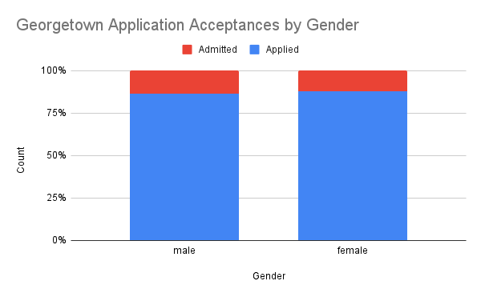

Assignment 2.1
Here is my assignment for ANYL 575
I hope you enjoy it!
Data Analysis
The data I will be presenting breaks down data from 2019 regarding Georgetown University's application and admissions numbers by gender. The data is from Data USA.
| Number Applied | Number Accepted | |
|---|---|---|
| Male | 9075 | 1409 |
| Female | 13689 | 1864 |
This data is interesting because as we can see, there are far fewer men applying to Georgetown University. This instance of a higher number of women applying is on par with various studies that show more women than men are going to college. As less men are applying but colleges want a diverse group of both men and women, admissions rates are slightly higher for men, as shown in this visual:
While the differences are slight, you can see the red bar on the left, representing the percentage of accepted males compared to their number of applications, is slightly greater than the female statistics.
Conclusion
Georgetown University is similar to many other schools in that it has more female applicants. Due to the disproportionate number of applicants, males have a better chance of being admitted to the university, even though this advantage is only slightly higher.